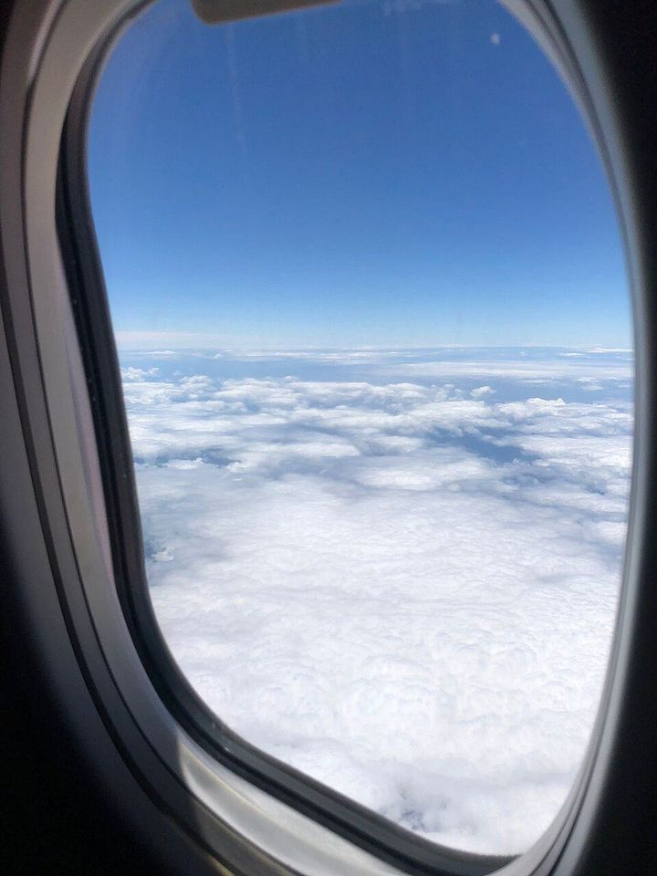
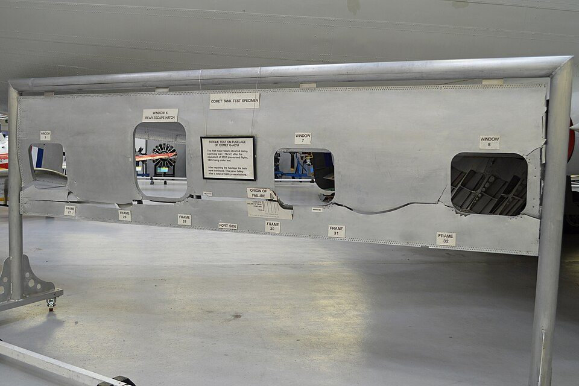

飛行機の窓にはなぜ小さな穴がある？ 窓・与圧・座席に隠れた航空機の安全設計
要点まとめ
旅客機の窓をよく見ると、下の方に小さな穴があります[1]。窓に穴があいていて大丈夫なのかと、不思議に思った人もいるかもしれません。この記事では、窓の穴の役割と窓の角が丸い理由、客室の気圧と酸素マスク、離着陸のときに頼まれることの理由など、旅客機の安全の仕組みを、航空当局の規則や事故調査の資料、航空会社の説明でまとめました。規則は、日本（国土交通省）と米国（連邦航空局）を中心に紹介します。

窓の小さな穴の正体
窓は2枚1組。客室側にもう1枚の板
外側の窓・内側の窓・傷よけ板の3枚が重なっている
日本航空（JAL）は、ボーイング777の客室の窓について、アクリル製の2枚の窓が組み合わさって、機内側から胴体にはめられていると説明しています[1]。英国の航空事故調査局（AAIB）の報告書も、エアバスA321の客室の窓を、2枚の窓ガラスとゴムのシールでひと組としています[2]。客室の内装には3枚目の板（傷よけ板）が付いていて、乗客が触れるのはこの板です。内側の窓を傷から守るための消耗品で、機体の荷重を受ける構造ではありません[2]。
小さな穴は、内側の窓の「通気穴」
機内の空気を2枚の間に入れ、窓の曇りを防ぐ
JALは、2枚の窓の間にはすき間があり、機内側の窓の下の方にある小さな穴から機内の空気を取り込むことで、窓が曇るのを防いでいると説明しています[1]。AAIBも、内側の窓にある通気穴（vent hole）が、客室の圧力を2枚の窓の間の空間に入れるとしています[2]。客室から見ると、傷よけ板の奥にある内側の窓は、3枚の真ん中にあたります。
2枚とも、1枚で与圧に耐えられる
片方が壊れても、もう1枚が残る「二重の備え」
JALは、2枚の窓は1枚でも機内の与圧に耐えられる強度を持っているとしています[1]。AAIBも、2枚とも胴体の内と外の圧力差をまるごと受け止められ、どちらかが壊れても備えになる（冗長性がある）と説明しています[2]。米国の規則も、与圧する飛行機の窓は、1か所が壊れた後でも最大の圧力差に耐えることを求めています[7]。
窓が2組外れても、客室の与圧は保たれた
2023年の英国の事例。傷よけ板が残り、外とつながらなかった
2023年10月4日、英国のロンドン・スタンステッド空港を出たエアバスA321で、離陸の後に窓のゆるみが見つかり、機体は空港に引き返しました[2]。着陸後の点検で、窓が2組まるごとなくなっていましたが、傷よけ板はすべて残っていたため、客室と外の空気が直接つながる穴はできていませんでした[2]。飛行中、客室の与圧は正常に保たれていました[2]。窓が外れたのは、前日の撮影で、強い照明の赤外線を受けて窓が傷んでいたためとされています[2]。
窓の角が丸い理由：コメット機の教訓
世界で初めての与圧式のジェット旅客機、英国のデ・ハビランド コメット1型は、1952年5月2日に就航しました[3]。しかし1954年に2機が相次いで空中分解し、調査で、角ばった開口の角から金属疲労が起きていたことが分かりました[3]。
- 1952年5月2日
コメット1型が就航
世界初の与圧式のジェット旅客機[3]
- 1954年1月10日
イタリアのエルバ島沖で空中分解
高度27,000ft付近を上昇中。35人全員が死亡[3]
- 1954年3月23日
改修のうえ、運航を再開
この時点では、胴体の疲労は原因と考えられていなかった[3]
- 1954年4月8日
ナポリ沖で空中分解
35,000ftへ上昇中。21人全員が死亡。全機の耐空証明が取り消された[3]
- 調査
胴体を水槽に沈め、与圧をくり返す試験
約3,060回の与圧の後、前方の非常口の窓の角から壊れた[3]
- 結論
エルバ島沖の事故は、ADF窓の付近の疲労による破壊
英国の報告書の結論（FAAのページが引用）[3]
- その後
Comet 1XBで、窓が楕円形になった
約4年後、Comet 4で営業運航を再開[3]
最初の亀裂は「客室の窓」ではなかった
起点は、胴体のてっぺんにあるADF用の四角い窓
エルバ島沖の機体の残骸を調べると、最初に壊れたのは、胴体のいちばん上、主翼の少し前にある自動方向探知機（ADF。電波で方角を調べる装置）用の2つの四角い窓の部分でした[3]。英国の報告書は、事故の原因を「ADF窓の付近で、疲労によって与圧室の構造が壊れたこと」と結論しています（FAAのページが引用）[3]。水槽の試験で壊れたのも、客室の窓ではなく前方の非常口の窓の角でした[3]。
角ばった穴では、力が角に集まる
縁が丸ければ、力はなめらかに回り込む
FAAは、四角に近い窓が、想定よりはるかに大きな「応力集中」（まわりより局所的に大きな力がかかること）を生み、窓の角の材料を疲労させたと説明しています[3]。今の飛行機の丸い・楕円の窓では、力が曲がった縁に沿ってなめらかに流れるのに対し、角ばった窓では急な角を力がなめらかに回れず、応力集中が起きるとしています[3]。
試験では16,000回もったのに、実機は約1,000回
先に2倍の圧力をかけた試験で、角が強くなっていた
デ・ハビランド社は、試作の胴体で、16,000回の与圧をくり返す試験をしていました。ただ、その胴体には先に、飛行時の2倍の圧力をかける試験をしていて、角の材料が加工硬化（強い力で変形して性質が変わること）し、疲労に強くなっていました[3]。そうした試験を受けていない量産機は、約1,000回の与圧で寿命に達していました[3]。予定していた寿命は10,000回でした[3]。

上空の気圧と、与圧・酸素マスク
高い空ほど気圧は下がり、高さ約11kmまでは気温も下がります[8]。旅客機は、客室の気圧を外より高く保って（与圧して）飛んでいます[4]。下の表は、高さごとの気圧と気温を、標準的な大気の式で計算した目安です。旅客機がふだんどの高さを飛ぶかについての公的な説明は見つからなかったため、高さごとの目安として示します。
| 高さ | 気圧（地上を100%） | 気温 | 規則などとの関係 | 意識を保って行動できる時間の目安 |
|---|---|---|---|---|
| 0ft（海面） | 101.3kPa（100%） | 15℃ | ― | ― |
| 8,000ft（約2,400m） | 約75kPa（約74%） | 約−1℃ | 客室の気圧高度の上限（通常時）[4] | ― |
| 10,000ft（約3,000m） | 約70kPa（約69%） | 約−5℃ | 客室がこれを超えると、操縦士に警報[4] | ― |
| 15,000ft（約4,600m） | 約57kPa（約56%） | 約−15℃ | 客室がこれを超える前に、酸素マスクが自動で出る[9] | ― |
| 25,000ft（約7,600m） | 約38kPa（約37%） | 約−35℃ | 減圧しても、これを2分を超えて続けない[4] | 3〜5分（急減圧の後は1.5〜2.5分）[10] |
| 30,000ft（約9,100m） | 約30kPa（約30%） | 約−44℃ | ― | 1〜2分（30秒〜1分）[10] |
| 35,000ft（約10,700m） | 約24kPa（約24%） | 約−54℃ | ― | 30秒〜1分（15〜30秒）[10] |
| 40,000ft（約12,200m） | 約19kPa（約19%） | 約−56.5℃ | 減圧しても、これを超えない[4] | 15〜20秒[10] |
気圧と気温は、NASAの大気の近似式（測定を平均した「標準の日」のモデル）で筆者が計算した目安です[8]。実際の値は天気や場所で変わります。意識を保って行動できる時間はFAAの資料の平均的な目安で、個人差が大きいとされています[10]。
客室は「高度8,000ft相当」以下に保つ
日本・米国・欧州の基準とも、通常は8,000ft以下
米国の規則は、通常の運航で、客室の気圧高度（客室の気圧が、どの高さの気圧に当たるか）を8,000ft以下に保つ設備を求めています[4]。日本の耐空性審査要領も2,400m（8,000ft）以下[5]、欧州航空安全機関（EASA）の基準も2,438m（8,000ft）以下としています[11]。8,000ftの気圧は、計算では地上の約74%です。
減圧しても「25,000ftで2分」まで
客室が10,000ftを超えると、操縦室に警報が出る
規則は、極めてまれとは言えない故障で減圧したときでも、客室の気圧高度が25,000ftを2分を超えて続いたり、40,000ftを超えたりしないように設計することを求めています[4][5]。客室の気圧高度が10,000ftを超えると、操縦士に警報が出るようにします[4]。
酸素マスクは、15,000ftを超える前に自動で出る
マスクは、座席の数より1割以上多く備える
30,000ftを超える高さで飛ぶ証明を受ける機体では、客室の気圧高度が15,000ftを超える前に、酸素マスクが自動で乗客の前に出てくる決まりです[9]。マスクは座席の数より10%以上多くし、化粧室にも2個以上備えます[9]。自動の仕組みが働かないときに、乗務員が手で出せるようにもしておきます[9]。
酸素の量は「何分」ではなく「高さと時間」で決まる
高い高度にいる間に必要な量を積んでおく決まり
「酸素マスクの酸素は何分出る」という公式の数字は見つかりませんでした。米国の運航の規則は、乗客用の酸素の量を、客室の気圧高度とその高さを飛ぶ時間で決めるとしています[12]。客室の気圧高度が15,000ftを超える間は乗客全員の分、14,000〜15,000ftでは乗客の30%の分、10,000〜14,000ftでは30分を超える部分について乗客の10%の分が必要です[12]。減圧は酸素が最も必要になる地点で起き、その後、手順に従って安全に飛行を終えられる高さまで降りると想定して計算します[12]。
「まず自分のマスク」の理由
高い空で酸素がないと、正しく動ける時間は短い
国土交通省の指針は、安全のしおりに、酸素マスクの着け方として「付き添い人は自らが先にマスクを着用すること」を書くよう求めています[13]。FAAの資料では、酸素が足りない状態で正しく行動できる時間の目安は、35,000ftで30秒〜1分、急な減圧の後では15〜30秒です[10]。これは気を失うまでの時間ではなく、判断や動作はすぐに鈍ることがあるとしています[10]。先に自分が着けないと、子どもなどを助ける前に自分が動けなくなるおそれがあるためと考えられます（筆者の見解）。
離着陸で頼まれることと、その理由
国際航空運送協会（IATA）は、2025年の安全報告で、安全上の課題は離陸・着陸・地上での作業に集中しているとしています[14]。離着陸の前に頼まれることには、法令で決まった義務と、法令の項目にないものがあります。
| 行動 | 決まり | 理由として確認できた説明 |
|---|---|---|
| シートベルトを締める | 義務。離着陸のときや、機長が指示したとき（航空法施行規則）[6] | 緊急時の衝撃から身を守るため（JAL）[15] |
| 背もたれ・テーブル・フットレストを戻す | 義務。離着陸のとき（同）[6]。米国も、離着陸のときは背もたれを立てる決まり[16] | 背もたれが後ろの人の脱出をふさがない、立てた位置が最も丈夫、開いたテーブルは強い着陸でけがのもと（フィンランドの運輸当局の検査官）[17] |
| 手荷物を通路などに置かない | 義務（同）[6] | 非常時の脱出の妨げになるおそれがあるため（同規則の文言）[6] |
| 日よけを上げる | 日本の法令・国の指針に項目は見当たらない[6][13] | 乗客が外の異常に気付ける、乗務員が脱出する側を決めやすい、外の救助者が中を見られる（同検査官）[17] |
| 夜に照明を暗くする | 同上 | 目を暗さに慣らしておくため（同検査官）[17] |
ベルト・背もたれ・手荷物は、法令で決まった義務
守らないと「安全阻害行為」にあたる
航空法施行規則は、離着陸のときなどにシートベルトを締めないこと、離着陸のときに座席の背当・テーブル・フットレストを所定の位置に戻さないこと、手荷物を通路など脱出の妨げになるおそれがある場所に置くことを「安全阻害行為」としています[6]。JALは、機長の命令に従わない場合は罰金が科せられることがあると案内しています[18]。国土交通省の指針も、客室乗務員が離陸前と着陸前に「テーブル、背もたれ等を元の位置に戻すこと」を伝えるよう定めています[13]。
日よけと照明には、日本の公式な説明が見当たらない
理由を説明していたのは、フィンランドの当局者
確認した範囲では、航空法施行規則や国土交通省の指針に、日よけや照明についての項目はなく、日本の航空会社の公式な理由の説明も見つかりませんでした。フィンランドの空港会社Finaviaの記事で、同国の運輸当局（当時のTrafi）の客室安全担当の検査官は、日よけを開けておくと、乗客が外の異常に気付ける、乗務員が外の様子を見て脱出する側を決められる、外の救助者が中を見られる、と説明しています[17]。昼は照明を明るくして目を日光に慣らし、夜は照明を暗くして目を暗さに慣らすのは、脱出のときに急な明るさの変化で一時的に見えにくくならないようにするためだとしています[17]。
脱出・座席・雷・エンジン故障への備え
| 項目 | 主な基準 | 米国 | 日本 |
|---|---|---|---|
| 与圧 | 客室の気圧高度は、通常8,000ft（2,400m）以下 | 14 CFR 25.841[4] | 耐空性審査要領 4-9-1-1[5] |
| 非常脱出 | 乗客が44人を超える機体は、模擬の非常状態で、全員が90秒以内に地上へ脱出できることを示す | 14 CFR 25.803[21] | 同 4-7-2-3[5] |
| 座席 | 前向き16g・下向き14gの衝撃の試験 | 14 CFR 25.562[19] | 同 3-8-1A[5] |
| 雷 | 雷で致命的な影響を受けないよう守る | 14 CFR 25.581[22] | 同 3-10-1[5] |
| 双発機の長距離飛行（ETOPS） | 承認がなければ、エンジン1基で飛んで、適した空港まで60分を超える地点を含む経路は飛べない | 14 CFR 121.161[23] | 国土交通省の審査基準[24] |
欧州（EASA）の基準（CS-25、Amendment 27）も、与圧の8,000ft、脱出の90秒、座席の16g、雷の防護で同じ内容です[11]。日本の耐空性審査要領は第60改正（2020年）の版で確認しました。
全員が90秒以内に脱出できること
乗客が44人を超える機体は、原則として実演で確かめる
規則は、乗客が44人を超える飛行機について、最大の座席数の人が、模擬の非常状態で90秒以内に地上へ脱出できることを、実際の試験で示すよう求めています（解析と試験の組み合わせで同等と認められる場合を除く）[21][5]。国土交通省によると、運輸安全委員会が2017年12月までに公表した航空事故などの報告書約1,500件のうち、14件で脱出スライドを使った非常脱出が行われ、うち13件で旅客が負傷しています[25]。
座席は、重力の16倍の衝撃で試す
米国では、2009年10月27日以降に造られた機体の全席が対象
座席は、前向きに床の減速が16g（重力の16倍）以上、下向きに14g以上になる衝撃の試験に合格することが求められます[19][5]。試験には、体重170ポンド（約77kg）の人体の模型を使います[19]。米国では、2009年10月27日以降に製造された機体は、乗客と客室乗務員のすべての座席がこの基準を満たす必要があります[16]。
旅客機は、1機あたり年に1〜2回雷を受ける
機体が電気の通り道になり、先端に雷が付きやすい
FAAは、数十年分のデータでは、輸送用の飛行機は平均して1機あたり年に1〜2回雷を受けると説明しています[27]。機体は電気をよく通すので電流の通り道になり、雷は翼の先、機首、尾翼など先端の部分に付きやすいとしています[27]。規則は、雷で致命的な影響を受けないよう守ることを求め、金属の部品は機体にしっかり電気的につなぐ（ボンディング）、金属でない部品は電流をそらす、などの方法を挙げています[22][5]。
エンジンが1基止まっても、上昇できる
双発機の「60分ルール」と、それを広げるETOPS
規則は、離陸して車輪を上げるまでの間に最も影響の大きいエンジンが止まっても、双発機なら上昇を続けられる（上昇の勾配がプラスになる）性能を求めています[29]。米国では、双発機は承認がなければ、エンジン1基で飛んだときに適した空港まで60分を超える地点を含む経路を飛べません（3発以上の旅客機は180分）[23]。この制限を、条件を満たした場合に広げる運航がETOPSです[30]。日本でも、60分を超える地点を含む経路の運航（ETOPS）には国の承認が必要で、この審査基準では、エンジン1基での最大の飛行時間を180分以内としています[24]。
モバイルバッテリーの新しいルール
新ルール 機内持ち込みは2個まで、機内で充電しない
2026年4月24日から、3つのルールが加わった
国土交通省は2026年4月14日、モバイルバッテリーの機内持ち込みの新しいルールを発表し、4月24日から適用しました[31]。機内でのモバイルバッテリーの発煙・発火の事例を受けて、国際民間航空機関（ICAO）の国際基準が緊急に改訂された（3月27日承認）のに合わせたものです[31]。加わったのは、次の3つです[31]。
- 機内に持ち込めるのは2個（160Wh以下に限る）まで
- 機内でモバイルバッテリーに充電しない
- 機内でモバイルバッテリーから他の電子機器に充電しない
| ルール | 違反したときの罰則の可能性 |
|---|---|
| 1 預け入れの荷物に入れない（機内に持ち込む） | あり |
| 2 160Whを超えるものは持ち込めない | あり |
| 3 ショートしないよう1個ずつ保護する | あり |
| 4 座席の上の収納棚に入れず、座席ポケットなど手元に置く | 記載なし |
| 5 2個まで（新） | あり |
| 6 機内で充電しない（新） | あり |
| 7 他の電子機器に充電しない（新） | 記載なし |
出典: 国土交通省の報道発表資料の別紙1。1〜3・5・6に違反すると、航空法により罰則が科される可能性があるとしています[32]。別紙1は、これらの対応を、機内での発煙・発火への対応を強め、客室の安全を高めるためのものとしています[32]。
注意
航空会社によっては、より厳しいルールを設けていることがあり、各社の指示に従うよう国土交通省は案内しています[32]。
数字で見る空の安全
見方: 国際民間航空機関（ICAO）の安全報告（2026年版）によると、2025年の定期の商業航空の事故は85件で、100万出発あたり2.23件でした（2024年は2.56件）[34]。死亡事故は4件（2024年は10件）、死者は387人（同296人）でした[34]。2025年の出発は約3,808万回です[34]。
IATAの集計でも、事故の割合は長く下がっている
2025年の全事故率は、100万回あたり1.32件
国際航空運送協会（IATA）の2025年の年次安全報告によると、全事故率は、2005年の100万セクター（1区間の飛行）あたり3.72件から、2025年は1.32件に下がりました[14]。2025年の機内の死者は394人でした[14]。ICAOとIATAで死者の数が違うのは、集計の範囲や数え方が違うためと考えられます（筆者の見解）。
日本で調査の対象になった航空事故は、2025年に21件
このうち、大型の飛行機は3件
運輸安全委員会の統計（2026年7月10日時点）では、調査の対象になった航空事故は、2025年が21件でした。内訳は、大型飛行機3件、小型飛行機8件、超軽量動力機1件、ヘリコプター6件、滑空機3件です[35]。2024年は19件（うち大型飛行機7件）、2023年は17件（同4件）でした[35]。数は、調査の進み具合で変わることがあるとされています[35]。
今回確認できなかった点
- ボーイングやエアバス自身による、窓の穴の説明
- 「ふだんは外側の窓が主に圧力を受け、内側の窓は予備」という説明の公式な根拠（AAIBとJALは「どちらも1枚で耐えられる」まで）
- 窓の穴が霜（凍結）を防ぐという公式な説明（JALの説明は「曇り」を防ぐ）
- 窓の枚数や穴の位置が、すべての機種で同じかどうか
- 旅客機がふだん飛ぶ高さ（巡航高度）についての公的な説明
- 乗客用の酸素マスクから酸素が出る時間（「約○分」）の公式な数字
- 日よけを上げる・照明を暗くする・背もたれを戻すことの理由についての、日本の国や航空会社の公式な説明
- 翼の放電索が雷を逃がすという説明の、公式な根拠
- 日本の耐空性審査要領の、第60改正（2020年）より後の改正の有無
- IATAの集計での、2025年の死亡事故の件数
関連する記事
出典（35件）
閲覧日はいずれも2026年11月10日〜11日
- ボーイング777型機キャビンウィンドウカットモデル（日本航空（JAL））
- AAIB Bulletin: G-OATW（Airbus A321-253NX、2023年10月4日の事故、PDF）（英国 航空事故調査局（AAIB））
- Lessons Learned: de Havilland DH-106 Comet 1（G-ALYV、G-ALYP、G-ALYY）（米国 連邦航空局（FAA））
- 14 CFR 25.841 Pressurized cabins（与圧客室）（米国 連邦規則集（eCFR））
- 耐空性審査要領 第Ⅲ部 飛行機（耐空類別が飛行機輸送Ｔであるもの）（第60改正、PDF）（国土交通省 航空局）
- 航空法施行規則（第164条の16 安全阻害行為等の禁止）（e-Gov法令検索）
- 14 CFR 25.775 Windshields and windows（風防と窓）（米国 連邦規則集（eCFR））
- Earth Atmosphere Model - Metric Units（NASA グレン研究センター）
- 14 CFR 25.1447 Equipment standards for oxygen dispensing units（酸素マスクの基準）（米国 連邦規則集（eCFR））
- AC 61-107B CHG 1 Aircraft Operations at Altitudes Above 25,000 Feet MSL and/or Mach Numbers (Mmo) Greater Than .75（2015年、PDF）（米国 連邦航空局（FAA））
- Easy Access Rules for Large Aeroplanes (CS-25)（Amendment 27、PDF）（欧州航空安全機関（EASA））
- 14 CFR 121.329 Supplemental oxygen for sustenance: Turbine engine powered airplanes（乗客・乗員用の酸素）（米国 連邦規則集（eCFR））
- 旅客に周知すべき安全情報に関する一般指針（2021年3月24日制定、2022年3月29日一部改正、PDF）（国土交通省 航空局）
- 2025 Annual Safety Report – Executive Summary（国際航空運送協会（IATA））
- 突然の揺れに備えて（国内線）（日本航空（JAL））
- 14 CFR 121.311 Seats, safety belts, and shoulder harnesses（座席とシートベルト）（米国 連邦規則集（eCFR））
- Shades on a plane: Why are cabin lights dimmed during takeoff and landing?（2016年）（Finavia（フィンランドの空港運営会社））
- 法律で定められた禁止事項がございます（国内線）（日本航空（JAL））
- 14 CFR 25.562 Emergency landing dynamic conditions（座席の衝撃の試験）（米国 連邦規則集（eCFR））
- 国際民間航空機関(ICAO)により推奨された「緊急時の衝撃防止姿勢」について（2020年3月30日）（スカイマーク）
- 14 CFR 25.803 Emergency evacuation（非常脱出）（米国 連邦規則集（eCFR））
- 14 CFR 25.581 Lightning protection（雷の防護）（米国 連邦規則集（eCFR））
- 14 CFR 121.161 Airplane limitations: Type of route（飛べる経路の制限）（米国 連邦規則集（eCFR））
- 双発機による長距離進出運航実施承認審査基準（整理番号5-003、PDF）（国土交通省 航空局）
- 非常脱出時における適切な対応のお願い（国土交通省）
- 緊急脱出時のお願い（国内線）（日本航空（JAL））
- Lessons Learned: Pan American Flight 214, Boeing 707-121, N709PA（米国 連邦航空局（FAA））
- Aeronautical Information Manual 7-6-12 Precipitation Static（降水静電気）（米国 連邦航空局（FAA））
- 14 CFR 25.121 Climb: One-engine-inoperative（エンジン1基停止時の上昇）（米国 連邦規則集（eCFR））
- AC 120-42B Extended Operations (ETOPS and Polar Operations)（2008年、PDF）（米国 連邦航空局（FAA））
- モバイルバッテリーの機内持込みの新たなルールについて ～4月24日から新たなルールを適用します～（2026年4月14日）（国土交通省）
- 報道発表資料と別紙1「【旅客の皆様へ】モバイルバッテリーの持込みについて」（2026年4月14日、PDF）（国土交通省 航空局）
- 航空機による爆発物等の輸送基準等を定める告示 別表第18（2026年4月24日適用、PDF）（国土交通省）
- ICAO Safety Report 2026 Edition（PDF）（国際民間航空機関（ICAO））
- Statistics (Aircraft)（英語版、2026年7月10日時点）（運輸安全委員会）
写真・画像の出典（2件）
- 旅客機の客室の窓
写真: Marcelomenezes96／Wikimedia Commons（CC BY 4.0） - コメット1型の胴体の外板（与圧試験に使われたもの）
写真: Alan Wilson from Peterborough, Cambs, UK／Wikimedia Commons（CC BY-SA 2.0）